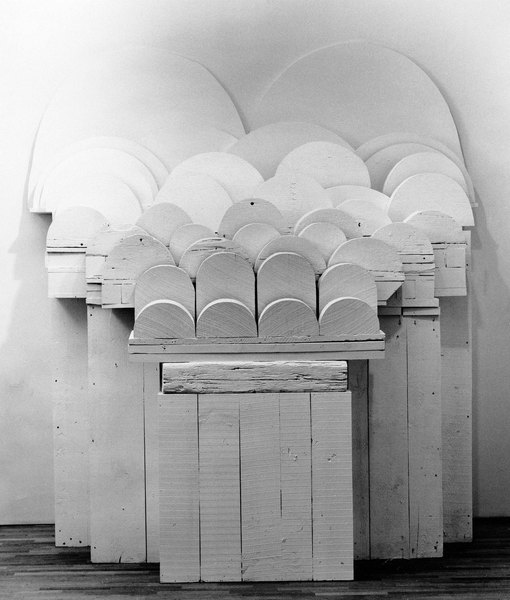
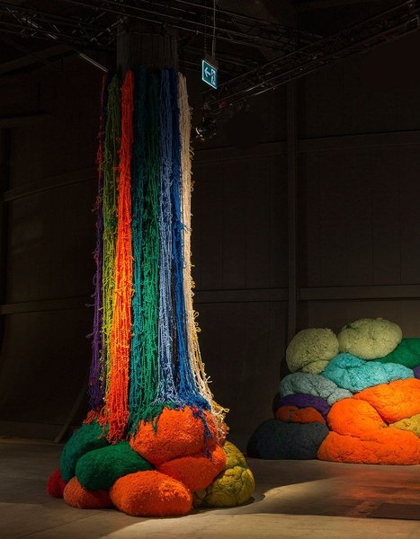
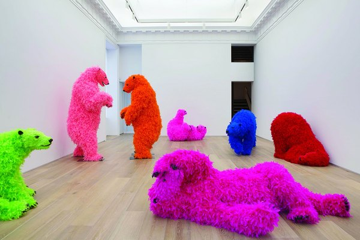
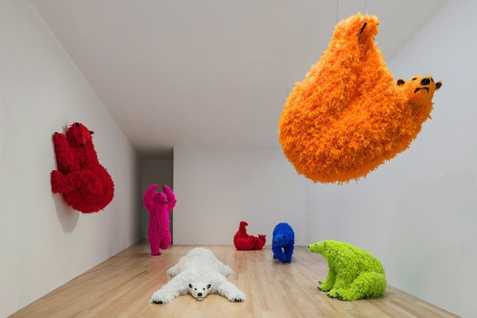
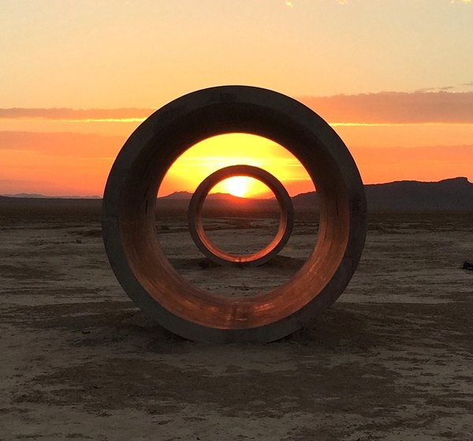

CRVI001354Ruth Asawa - Untitled (S.237, Hanging Six-Lobed, Interlocking Continuous Form)
Ruth Asawa · c. 1958 · hanging sculpture, enameled copper and brass wire · 1958
Ruth Asawa · c. 1958 · hanging sculpture, enameled copper and brass wire · 1958

CRVI001357Ruth Asawa - Untitled (S.055, Hanging Asymmetrical Nine Interlocking Bubbles)
Ruth Asawa · c. 1955 · hanging sculpture, galvanized steel, enameled copper and brass wire · 1955
Ruth Asawa · c. 1955 · hanging sculpture, galvanized steel, enameled copper and brass wire · 1955

CRVI001384Whitney Museum of American Art - Annual Exhibition 1966: Contemporary Sculpture and Prints
Designer unrecorded · Exhibition catalogue · Dec 16, 1966 – Feb 5, 1967 · 1966
Designer unrecorded · Exhibition catalogue · Dec 16, 1966 – Feb 5, 1967 · 1966

CRVI001385Whitney Museum of American Art - 1964 Annual Exhibition of Contemporary American Sculpture
Designer unrecorded · Exhibition catalogue · Dec 9, 1964 – Jan 31, 1965 · 1964
Designer unrecorded · Exhibition catalogue · Dec 9, 1964 – Jan 31, 1965 · 1964

CRVI001386Whitney Museum of American Art - Annual Exhibition 1962: Contemporary Sculpture and Drawings
Designer unrecorded · Exhibition catalogue · Dec 12, 1962 – Feb 3, 1963 · 1962
Designer unrecorded · Exhibition catalogue · Dec 12, 1962 – Feb 3, 1963 · 1962

CRVI001387Whitney Museum of American Art - Annual Exhibition 1960: Contemporary Sculpture and Drawings
Designer unrecorded · Exhibition catalogue · Dec 7, 1960 – Jan 22, 1961 · 1960
Designer unrecorded · Exhibition catalogue · Dec 7, 1960 – Jan 22, 1961 · 1960

CRVI001388Ruth Asawa - Untitled (S.693, Hanging Six-Lobed, Two-Part, Discontinuous Surface with a Sphere in the First Lobe)
Ruth Asawa · c. 1956 · hanging sculpture, brass and iron wire · photograph by Dan Bradica · 1956
Ruth Asawa · c. 1956 · hanging sculpture, brass and iron wire · photograph by Dan Bradica · 1956

CRVI003050Louise Bourgeois - The Destruction of the Father
1974
1974

CRVI003051Louise Bourgeois - Partial Recall
1979
1979

CRVI003052Sarah Sze - untitled

CRVI003053Sarah Sze - untitled

CRVI003054Sheila Hicks - untitled

CRVI003055Sheila Hicks - untitled

CRVI003056Agnes Denes - Tree Mountain — A Living Time Capsule
1992
1992

CRVI003057Paola Pivi - untitled

CRVI003058Paola Pivi - untitled

CRVI003059Paola Pivi - untitled

CRVI003060Nancy Holt - Sun Tunnels
1973
1973